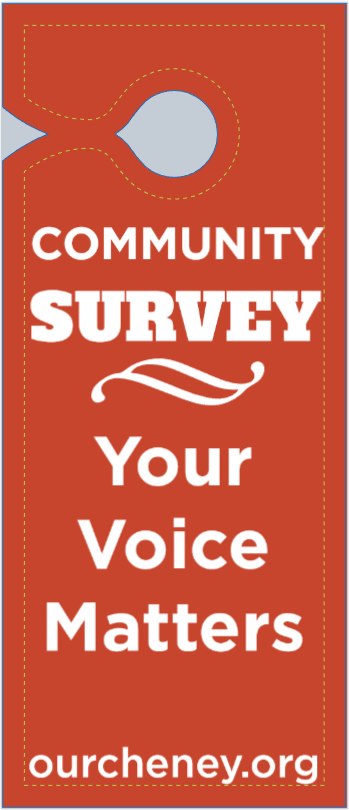
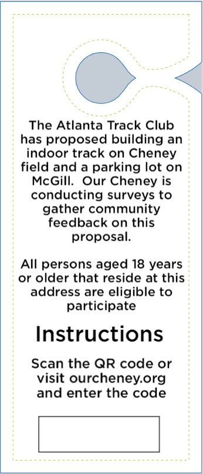
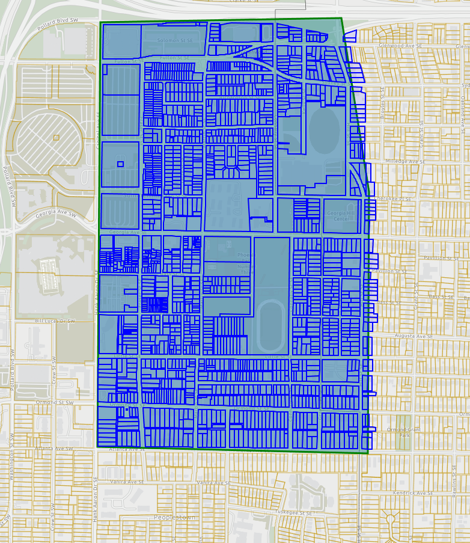

Your voice matters
Neighborhood survey.
Our Cheney will conduct a neighborhood survey to gather residents’ views on the future of Cheney Field and the proposed Atlanta Track Club project.
An invitation at every door
From your doorstep to the discussion.
We will place a door hanger on every door in the survey area. Each hanger will have a sticker with a unique code. Residents will enter that code when responding to the survey, allowing us to verify that responses come from the neighborhood.
Residents aged 18 or older who live at the address will be eligible to participate.
Keeping in touch by email.
Our Cheney will collect email addresses as part of the survey so that future surveys can be conducted by email.




The survey area
Roughly 1,500 houses.
There are roughly 1,500 houses in the highlighted area on the map.
Door hangers will be distributed throughout this area to invite our neighbors to take part.


Sharing what we learn
A report for the community.
Our Cheney will conduct the survey, analyze the responses, and create a report to share the findings with the community.
We will release anonymized results, with email addresses and other identifying information removed from the published results.